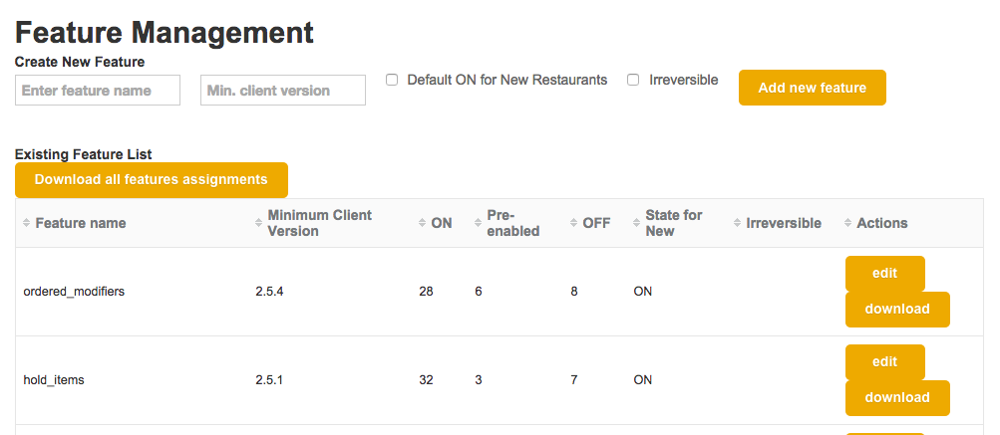
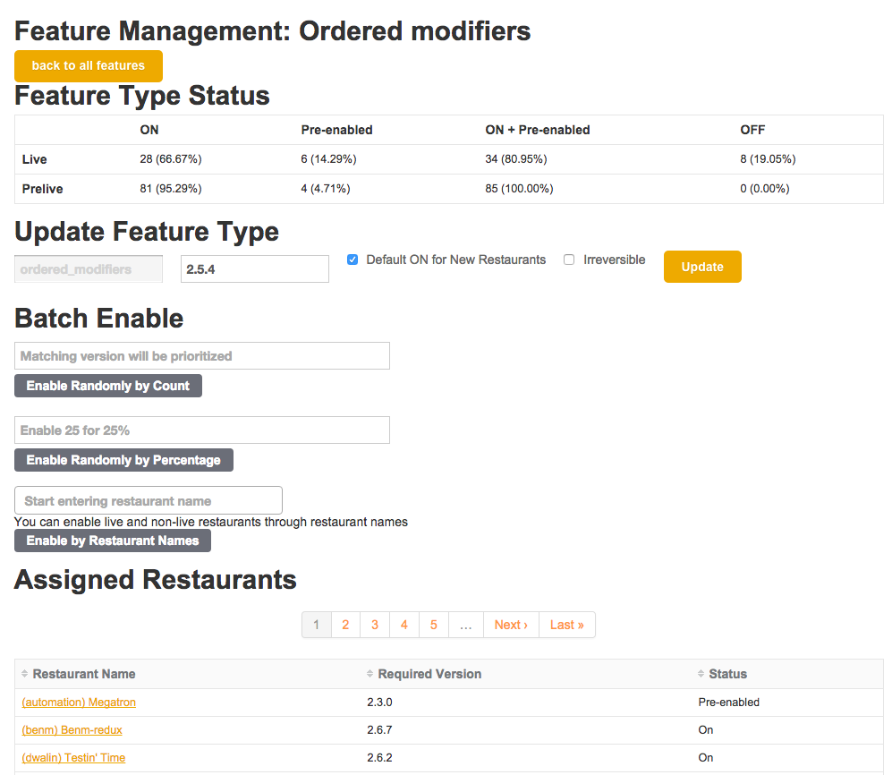

A thing that your thing (application) does, that users use, that is a coherent chunk of thing-ness
Not an A/B test! (In this context)
config file (deploy-time)
OR
database/datastore (runtime enablement)
(the user configuring their usage of the feature)
Once a feature is enabled, a user can configure it. What do you do with the configuration if the feature is turned off again? Keep it? Delete it? What if the configuration options mean different things when you turn the feature back on again?
Ruby
Java
Above and beyond:
Product users love it. All of the power, none of the danger. 
before_destroy :ensure_feature_is_reversible
def ensure_feature_is_reversible
!feature_type.irreversible? # double negative
end

Features have attributes, which differ per restaurant
create_table :restaurants do |t|
t.string :client_version, null: false
# other important stuff, like name
end
create_table :features do |t|
t.timestamps
t.string :name, null: false
t.string :minimum_client_version, null: false
t.boolean :on_for_new_restaurants, null: false, default: false
t.boolean :reversible, null: false, default: false
end
create_table :restaurant_features do |t|
t.uuid :restaurant_id, null: false
t.uuid :feature_id, null: false
end
add_index :restaurant_features, [:feature_id]
add_index :restaurant_features, [:restaurant_id]
module Concerns::Restaurant::FeatureToggle
extend ActiveSupport::Concern
included do
after_update :update_features, if: :client_version_changed?
on_create :initiate_features
end
def update_features
Feature.find_each do |feature_type|
feature = self.features.where(feature_type_id: feature_type.id).first_or_initialize
feature.update_status
feature.save! # in the real world, there is error handling here
end
end
def initiate_features
Feature.where(new_restaurants_on: true).find_each do |feature|
rfeature = restaurant_features.where(feature_id: feature.id).new
rfeature.initialize_enable
end
end
end
class Feature < ActiveRecord::Base
UNSAFE_FEATURES = ['place_holder', Features::BAD_FEATURE_2]
scope :safe_to_enable, -> { where "name not in (?)", UNSAFE_FEATURES }
has_many :restaurant_features, dependent: :destroy # important!!
after_update :update_feature_list, if: :client_version_changed?
def update_status
if enabled? && !has_sufficient_version?
pre_enable
elsif pre_enabled? && has_sufficient_version?
enable
end
end
def update_feature_list
features.includes(:feature_owner).find_each do |feature|
update_feature(feature)
end
end
end
Requirements evolve! Use evolutionary design. The first thing is rarely the right thing.
How do you migrate features between feature toggle systems? How do you test the migration? Backfills and intermediate comparison formats! (CSV)
Deploy strategy: how do you feature toggle the feature toggle feature?
Thanks, BreadcrumbPro team!!
AMA => twitter.com/compiledwrong
compwron.github.io/presentations/feature_feature/index.html
compwron.github.io/2015/12/10/features-of-features-with-rails
github.com/compwron/feature_feature
martinfowler.com/bliki/FeatureToggle.html
martinfowler.com/articles/feature-toggles.html
devchat.tv/ruby-rogues/252-rr-feature-toggles-with-pete-hodgson